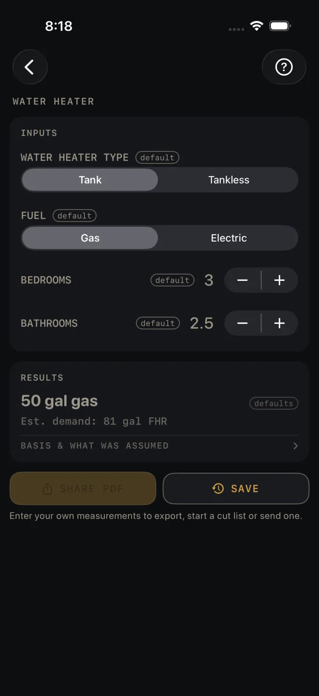
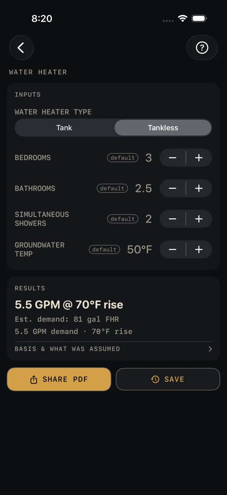

Water Heater
What it's for
Sizes a water heater from the size of the household. For a tank you get a gallon size for gas or electric. For tankless you get the flow in GPM and the temperature rise the unit has to deliver. It is a sizing estimate to take to the supplier, with two installation reminders from the code in the basis row. It does not check an installation.
Step by step
The example is the screen as it opens: a gas tank for 3 bedrooms and 2.5 bathrooms.

1 2 3 4 5 6- WATER HEATER TYPE — Tank or Tankless. The rows below change with it.
- FUEL — Gas or Electric. Tank mode only. The same demand lands on a different gallon size for each fuel.
- BEDROOMS — the number of bedrooms in the house. The example is 3.
- BATHROOMS — in steps of a half, so a powder room counts as 0.5. The example is 2.5.
- Read RESULTS: 50 gal gas, and under it Est. demand: 81 gal FHR.
- Tap BASIS & WHAT WAS ASSUMED for the installation reminders and the code edition.
Tankless mode
The same house, switched to Tankless and left on the rows as they open.

1 2 3 4- Switch WATER HEATER TYPE to Tankless. FUEL goes away and two rows appear.
- SIMULTANEOUS SHOWERS — how many showers you expect to run at the same time. It opens at 2 and cannot go below 1.
- GROUNDWATER TEMP — the temperature of the water coming into the house, in steps of 5°F. It opens at 50°F. Colder water in means more rise for the unit to make.
- Read RESULTS: 5.5 GPM @ 70°F rise. Under it, Est. demand: 81 gal FHR is unchanged, and the last line repeats the flow and the rise.
BEDROOMS and BATHROOMS stay on screen. They still feed the estimated demand line, but the tankless headline comes from the two rows above.
Reading the results
The headline in Tank mode is a tank size and fuel, such as 50 gal gas: the smallest tank on the screen's list whose first-hour rating covers the estimated demand.
Est. demand is the first-hour rating the household is estimated to need, in gallons, worked from BEDROOMS and BATHROOMS. It shows in both modes. When you shop, compare it with the first-hour rating on the heater's label, not with the tank's gallons.
The headline in Tankless mode is a flow and a rise, written as GPM @ °F rise, such as 5.5 GPM @ 70°F rise, and a second line repeats the GPM demand and the rise. Ask the supplier what the unit delivers at that rise.
Red lines. In Tank mode, DEMAND EXCEEDS COMMON TANK FHR — CONSIDER TWO UNITS OR TANKLESS. means the household needs more than the largest tank on the list delivers. The headline still shows that largest tank, so do not read it as enough. Fewer BEDROOMS or BATHROOMS would clear it, but only enter what the house has. The real fix is the one the line gives. In Tankless mode, COLD GROUNDWATER — VERIFY GPM AT THIS RISE, NOT THE HEADLINE RATING. appears when GROUNDWATER TEMP goes below the 50°F it opens on — at 50°F the rise is 70°F and the line stays off. It is a warning about the unit's brochure figure, not about your inputs.
BASIS & WHAT WAS ASSUMED opens to two installation reminders, each with its IRC section: one on the temperature-and-pressure relief valve, its drain and the pan, and one on appliances in a garage. They show for every result. They are not checks on your job. Under them is the line IRC 2021 — verify local code and a sentence saying that states and municipalities amend the code, and to verify local amendments and the adopted edition with your building department. Your local code and your inspector govern.
This screen has no drawing and no MATERIALS list. SHARE PDF stays dimmed until you change an input, then shares the recommendation, the reminders and your inputs. SAVE puts the result in History.
Common mistakes
- Shopping by gallons alone. The estimate is a first-hour rating. Two tanks of the same gallons can have different first-hour ratings, which is why FUEL changes the answer.
- Counting a half bath as a whole one. BATHROOMS steps by 0.5 for that reason.
- Leaving GROUNDWATER TEMP at 50°F in Tankless mode. Use your own incoming water temperature. It sets the rise, and the rise sets what a tankless unit can deliver.
- Expecting SIMULTANEOUS SHOWERS to change a tank size. It shows only in Tankless mode.
Related
- Plumbing — fixture units, drain size and pipe for the same house
- Electrical — has a switch for an electric water heater circuit
- Voltage Drop
- Cut sheets and templates
- Saving and History